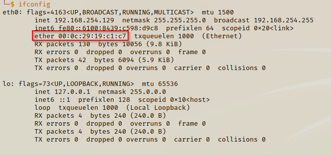

MAC Addresses
MAC stands for Media Access Control - any device using a network interface will have a MAC.
This is the phyical address of the device in the computer.
- Switches tell the computer what type of device it's using via it's MAC address; switches communicate using Layer 2 protocol.
- To retrieve a MAC address we enter ifconfig in the terminal
- The ether (Ethernet) number is the computer's MAC address
ifconfig

MAC addresses also have identifiers. They are the first 3x pairs of the computer's MAC address.
MAC identifiers

If we search for MAC address look up sites, we can enter the first 3x pairs of the MAC address to check if the MAC address exists and
if so, which vendor it belongs to.
REMEMBER !!
- MAC address uses a Layer 2 protocol
- MAC addresses are related to switches